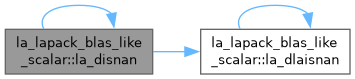
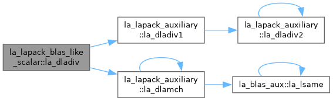
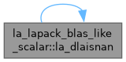
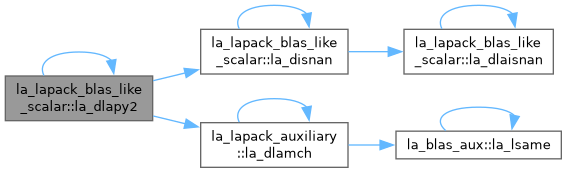
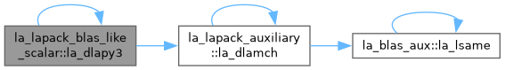
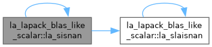
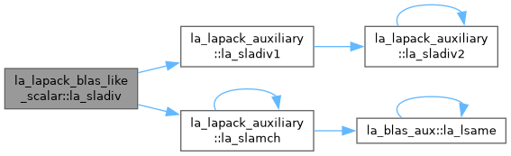
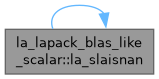
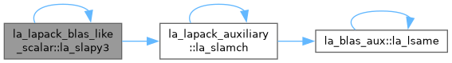
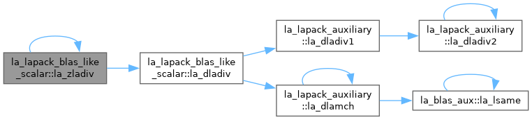

- Generated by
 1.13.2
1.13.2
|
fortran-lapack
|
BLAS-like scalar: complex division, Pythagorean sums, NaN tests. More...
Functions/Subroutines | |
| pure logical(lk) function, public | la_slaisnan (sin1, sin2) |
| This routine is not for general use. It exists solely to avoid over-optimization in SISNAN. SLAISNAN: checks for NaNs by comparing its two arguments for inequality. NaN is the only floating-point value where NaN != NaN returns .TRUE. To check for NaNs, pass the same variable as both arguments. A compiler must assume that the two arguments are not the same variable, and the test will not be optimized away. Interprocedural or whole-program optimization may delete this test. The ISNAN functions will be replaced by the correct Fortran 03 intrinsic once the intrinsic is widely available. | |
| pure logical(lk) function, public | la_dlaisnan (din1, din2) |
| This routine is not for general use. It exists solely to avoid over-optimization in DISNAN. DLAISNAN: checks for NaNs by comparing its two arguments for inequality. NaN is the only floating-point value where NaN != NaN returns .TRUE. To check for NaNs, pass the same variable as both arguments. A compiler must assume that the two arguments are not the same variable, and the test will not be optimized away. Interprocedural or whole-program optimization may delete this test. The ISNAN functions will be replaced by the correct Fortran 03 intrinsic once the intrinsic is widely available. | |
| pure real(sp) function, public | la_slapy3 (x, y, z) |
| SLAPY3: returns sqrt(x**2+y**2+z**2), taking care not to cause unnecessary overflow and unnecessary underflow. | |
| pure real(dp) function, public | la_dlapy3 (x, y, z) |
| DLAPY3: returns sqrt(x**2+y**2+z**2), taking care not to cause unnecessary overflow and unnecessary underflow. | |
| pure logical(lk) function, public | la_sisnan (sin) |
| SISNAN: returns .TRUE. if its argument is NaN, and .FALSE. otherwise. To be replaced by the Fortran 2003 intrinsic in the future. | |
| pure logical(lk) function, public | la_disnan (din) |
| DISNAN: returns .TRUE. if its argument is NaN, and .FALSE. otherwise. To be replaced by the Fortran 2003 intrinsic in the future. | |
| pure real(sp) function, public | la_slapy2 (x, y) |
| SLAPY2: returns sqrt(x**2+y**2), taking care not to cause unnecessary overflow and unnecessary underflow. | |
| pure real(dp) function, public | la_dlapy2 (x, y) |
| DLAPY2: returns sqrt(x**2+y**2), taking care not to cause unnecessary overflow and unnecessary underflow. | |
| pure subroutine, public | la_sladiv (a, b, c, d, p, q) |
| SLADIV: performs complex division in real arithmetic a + i*b p + i*q = ------— c + i*d The algorithm is due to Michael Baudin and Robert L. Smith and can be found in the paper "A Robust Complex Division in Scilab". | |
| pure subroutine, public | la_dladiv (a, b, c, d, p, q) |
| DLADIV: performs complex division in real arithmetic a + i*b p + i*q = ------— c + i*d The algorithm is due to Michael Baudin and Robert L. Smith and can be found in the paper "A Robust Complex Division in Scilab". | |
| pure complex(sp) function, public | la_cladiv (x, y) |
| CLADIV: := X / Y, where X and Y are complex. The computation of X / Y will not overflow on an intermediary step unless the results overflows. | |
| pure complex(dp) function, public | la_zladiv (x, y) |
| ZLADIV = X / Y, where X and Y are complex. The computation of X / Y will not overflow on an intermediary step unless the results overflows. | |
BLAS-like scalar: complex division, Pythagorean sums, NaN tests.
| pure complex(sp) function, public la_lapack_blas_like_scalar::la_cladiv | ( | complex(sp), intent(in) | x, |
| complex(sp), intent(in) | y ) |
CLADIV: := X / Y, where X and Y are complex. The computation of X / Y will not overflow on an intermediary step unless the results overflows.
DISNAN: returns .TRUE. if its argument is NaN, and .FALSE. otherwise. To be replaced by the Fortran 2003 intrinsic in the future.

| pure subroutine, public la_lapack_blas_like_scalar::la_dladiv | ( | real(dp), intent(in) | a, |
| real(dp), intent(in) | b, | ||
| real(dp), intent(in) | c, | ||
| real(dp), intent(in) | d, | ||
| real(dp), intent(out) | p, | ||
| real(dp), intent(out) | q ) |
DLADIV: performs complex division in real arithmetic a + i*b p + i*q = ------— c + i*d The algorithm is due to Michael Baudin and Robert L. Smith and can be found in the paper "A Robust Complex Division in Scilab".

| pure logical(lk) function, public la_lapack_blas_like_scalar::la_dlaisnan | ( | real(dp), intent(in) | din1, |
| real(dp), intent(in) | din2 ) |
This routine is not for general use. It exists solely to avoid over-optimization in DISNAN. DLAISNAN: checks for NaNs by comparing its two arguments for inequality. NaN is the only floating-point value where NaN != NaN returns .TRUE. To check for NaNs, pass the same variable as both arguments. A compiler must assume that the two arguments are not the same variable, and the test will not be optimized away. Interprocedural or whole-program optimization may delete this test. The ISNAN functions will be replaced by the correct Fortran 03 intrinsic once the intrinsic is widely available.

| pure real(dp) function, public la_lapack_blas_like_scalar::la_dlapy2 | ( | real(dp), intent(in) | x, |
| real(dp), intent(in) | y ) |
DLAPY2: returns sqrt(x**2+y**2), taking care not to cause unnecessary overflow and unnecessary underflow.

| pure real(dp) function, public la_lapack_blas_like_scalar::la_dlapy3 | ( | real(dp), intent(in) | x, |
| real(dp), intent(in) | y, | ||
| real(dp), intent(in) | z ) |
DLAPY3: returns sqrt(x**2+y**2+z**2), taking care not to cause unnecessary overflow and unnecessary underflow.

SISNAN: returns .TRUE. if its argument is NaN, and .FALSE. otherwise. To be replaced by the Fortran 2003 intrinsic in the future.

| pure subroutine, public la_lapack_blas_like_scalar::la_sladiv | ( | real(sp), intent(in) | a, |
| real(sp), intent(in) | b, | ||
| real(sp), intent(in) | c, | ||
| real(sp), intent(in) | d, | ||
| real(sp), intent(out) | p, | ||
| real(sp), intent(out) | q ) |
SLADIV: performs complex division in real arithmetic a + i*b p + i*q = ------— c + i*d The algorithm is due to Michael Baudin and Robert L. Smith and can be found in the paper "A Robust Complex Division in Scilab".

| pure logical(lk) function, public la_lapack_blas_like_scalar::la_slaisnan | ( | real(sp), intent(in) | sin1, |
| real(sp), intent(in) | sin2 ) |
This routine is not for general use. It exists solely to avoid over-optimization in SISNAN. SLAISNAN: checks for NaNs by comparing its two arguments for inequality. NaN is the only floating-point value where NaN != NaN returns .TRUE. To check for NaNs, pass the same variable as both arguments. A compiler must assume that the two arguments are not the same variable, and the test will not be optimized away. Interprocedural or whole-program optimization may delete this test. The ISNAN functions will be replaced by the correct Fortran 03 intrinsic once the intrinsic is widely available.

| pure real(sp) function, public la_lapack_blas_like_scalar::la_slapy2 | ( | real(sp), intent(in) | x, |
| real(sp), intent(in) | y ) |
SLAPY2: returns sqrt(x**2+y**2), taking care not to cause unnecessary overflow and unnecessary underflow.
| pure real(sp) function, public la_lapack_blas_like_scalar::la_slapy3 | ( | real(sp), intent(in) | x, |
| real(sp), intent(in) | y, | ||
| real(sp), intent(in) | z ) |
SLAPY3: returns sqrt(x**2+y**2+z**2), taking care not to cause unnecessary overflow and unnecessary underflow.

| pure complex(dp) function, public la_lapack_blas_like_scalar::la_zladiv | ( | complex(dp), intent(in) | x, |
| complex(dp), intent(in) | y ) |
ZLADIV = X / Y, where X and Y are complex. The computation of X / Y will not overflow on an intermediary step unless the results overflows.
